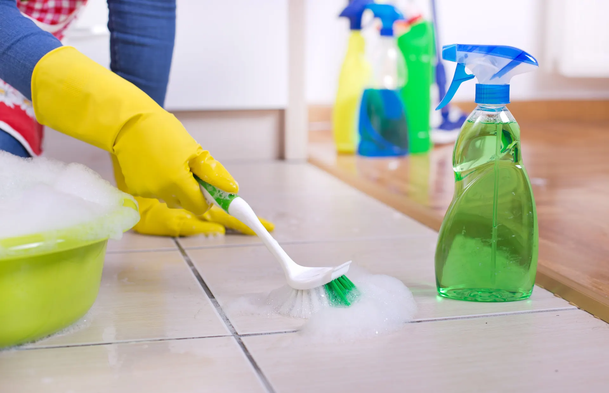
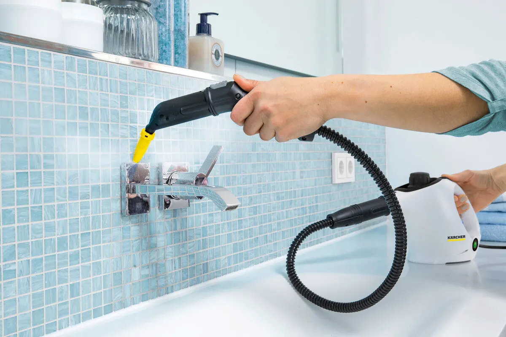

Клининг · Москва, у Новокузнецкой
Уборка квартир в Москве – цена за м² заранее
Поддерживающая от 50 ₽ за м², генеральная и после ремонта. Профессиональная техника и пар, средства под каждое покрытие.
- 5,0 по 72 отзывам на Картах
- Цена за м² – до приезда
- Парогенераторы и проф. пылесосы

Что входит в уборку
Входит
- Мытьё пола и плинтусов, пылесос по коврам
- Пыль со всех доступных поверхностей, ручки дверей и выключатели
- Генеральная: жир на кухне, налёт на смесителях и раковинах, шкафчики
- Средства – под каждый тип покрытия
- После работ выносим мусор
Отдельно, если нужно
- Мытьё окон – 500 ₽ за окно
Цена за м² – до приезда
Назовите площадь и вид уборки – получите сумму, а не «зависит от площади».
Квартира, за м²
- Поддерживающаяпол, плинтусы, пылесос по коврам, все доступные поверхности50 ₽ за м²
- Генеральнаяжир на кухне, налёт на сантехнике, пыль со всех поверхностей, шкафчики100 ₽ за м²
- После ремонтастроительный мусор и пыль150 ₽ за м²
Другое
- Влажная уборка дома100 ₽ за м²
- Предпродажная уборка100 ₽ за м²
- Уборка офиса100 ₽ за м²
- Коттедж, дом после стройки100 ₽ за м²
- Мытьё окон500 ₽ за окно
Цены – из прайса на Яндекс.Картах. Точную сумму подтвердим в переписке.
Как проходит
- 01
Заявка
Пишете метраж, вид уборки и адрес – отвечаем суммой и временем.
- 02
Приезд
Вовремя, со своим оборудованием и моющими средствами.
- 03
Уборка
Сверху вниз, от потолка к полу, пар – для сантехники и плитки.
- 04
Готово
Выносим мусор, вы принимаете чистую квартиру.

Почему нас выбирают
5,0 на Яндекс.Картах
72 отзыва, 78 оценок.
Цена за м² заранее
По прайсу, до приезда.
Своя техника
Промышленные и ранцевые пылесосы, парогенераторы.
Средства по покрытию
Подбираем под каждую поверхность.
Отзывы с Яндекс.Карт
«Обратился 24 сентября в компанию за клининговыми услугами. Убрали шикарно, полы сверкают, картины на стенах сияют от чистоты. Шкафы на кухне не узнать прямо, плита, балкон, настолько чистые. Что я просто захожу домой, и не узнаю свою квартиру. Спасибо ребятам огромное за их труд, и я ещё обязательно обращусь!»
юрий поспелов · 24 сентября 2024
«Компания Уборка от Жорки - это спасение, когда срочно надо прибраться, а времени нет. Мастера очень пунктуальны и трудолюбивы, качество на высоте, придраться не к чему. Дом блестит и сияет, спасибо, Уборка от Жорки»
Амалия Плиева · 2 ноября 2024
«Я очень доволен работой сотрудников клининговой компании. Ребята приехали вовремя, со своим оборудованием и моющими средствами. Быстро и качественно убрали всю квартиру после ремонта. Теперь я могу спокойно обживать новое жилище! Рекомендую всем данную компанию, здесь работают настоящие профессионалы своего дела.»
Сергей Котов · 22 июня 2024
Отзывы с карточки на Яндекс.Картах, без правок.
Частые вопросы
Нужны ли наши средства?
Нет: приезжаем со своим оборудованием и моющими средствами, подбираем их под тип покрытия.
Сколько стоит уборка после ремонта?
150 ₽ за м². Назовите площадь в калькуляторе – сумма посчитается сразу.
Убираете офисы и дома?
Да: офисы, коттеджи, дома после строительства – 100 ₽ за м².
Когда можно написать?
Заявки принимаем в WhatsApp и Telegram, офис работает с 10:00 до 18:00.
Назовите метраж – вернёмся с ценой и временем
- Адрес
- Садовническая улица, 9, стр. 4, Москва
- Часы
- 10:00–18:00
- Телефон
- +7 (499) 649-31-86